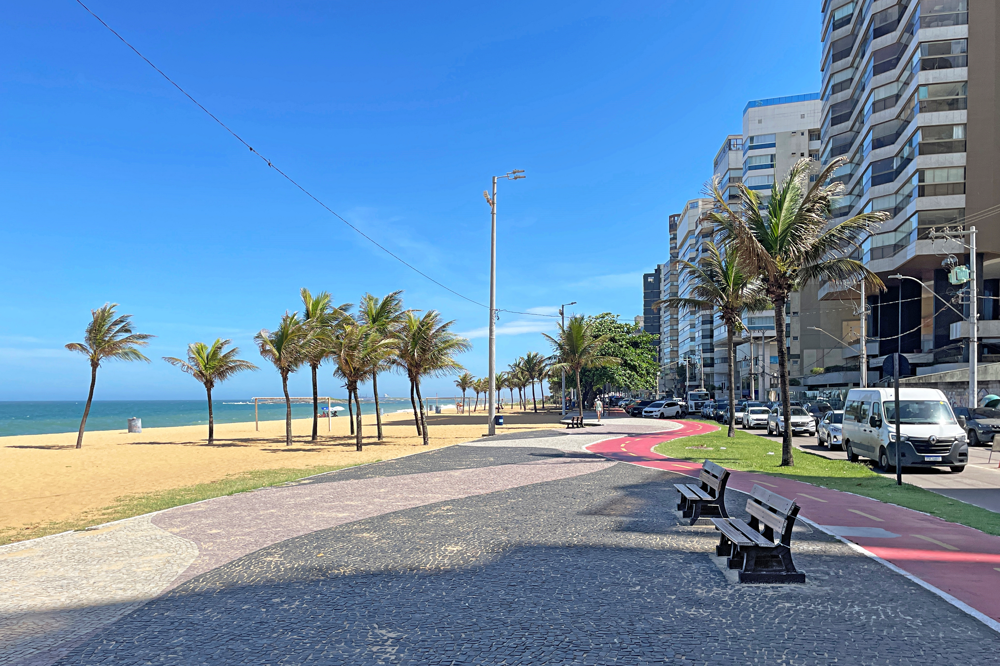
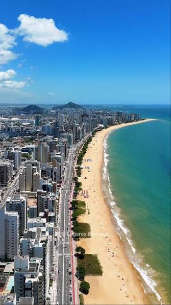
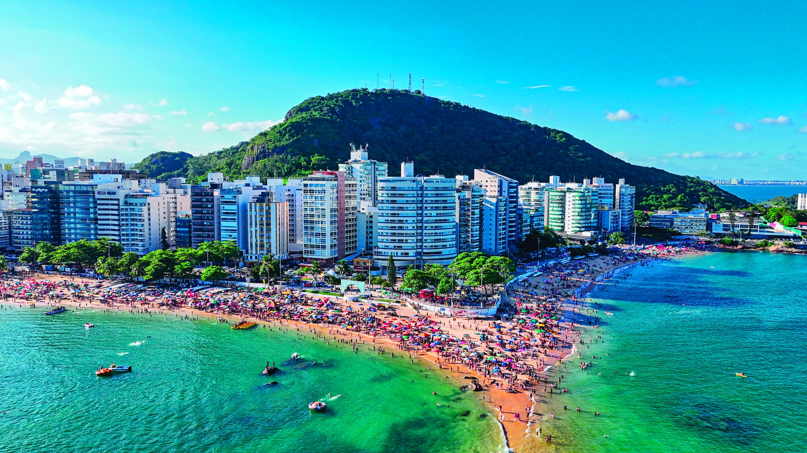

Leve seu Pou para conhecer Itapoã
Leve seu Pou para conhecer Itaparica
Leve seu Pou para conhecer a Praia da Costa

A Praia de Itapuã, vizinha contínua da Praia da Costa em Vila Velha (Espírito Santo), é uma orla urbana vibrante e bastante
frequentada por moradores e jovens. Caracterizada por sua larga faixa de areia dourada e águas com ondas um pouco mais agitadas,
ela se destaca por sua vida noturna movimentada, diversidade de bares e restaurantes ao redor e um clima descontraído e esportivo.
Salve um registro completo Itapoâ por:

A Praia de Itaparica, continuação natural da orla que integra a Praia da Costa e Itapuã em Vila Velha (Espírito Santo),
é a mais extensa e moderna do trio. Com uma larga faixa de areia, mar aberto e ondas mais fortes, ela atrai praticantes
de esportes aquáticos, moradores em busca de rotina saudável e famílias que aproveitam os quiosques reestruturados
e os novos empreendimentos da região.
Salve um registro completo Itapoâ por:

A Praia da Costa, localizada em Vila Velha (Espírito Santo), é uma das praias urbanas mais conhecidas e frequentadas do estado.
Famosa por seu calçadão movimentado, areias claras e águas que variam entre trechos calmos e ondas moderadas, ela combina
beleza natural com uma infraestrutura completa de quiosques, restaurantes e serviços ao redor.
Salve um registro completo da Praia da Costa por: